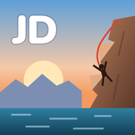
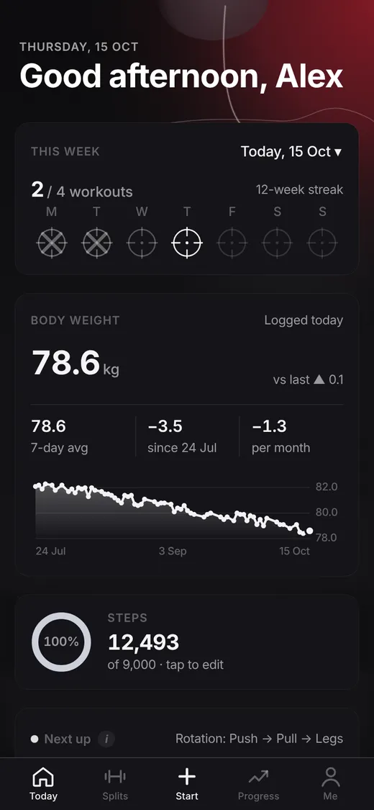
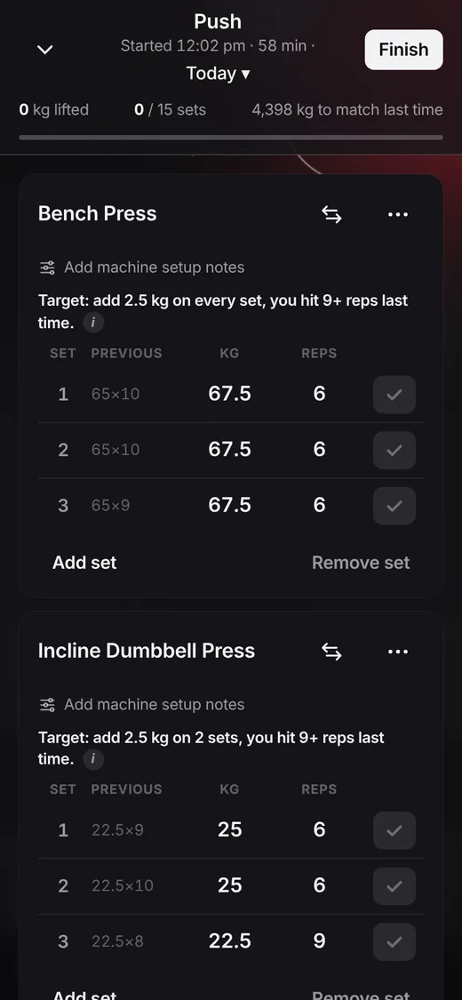
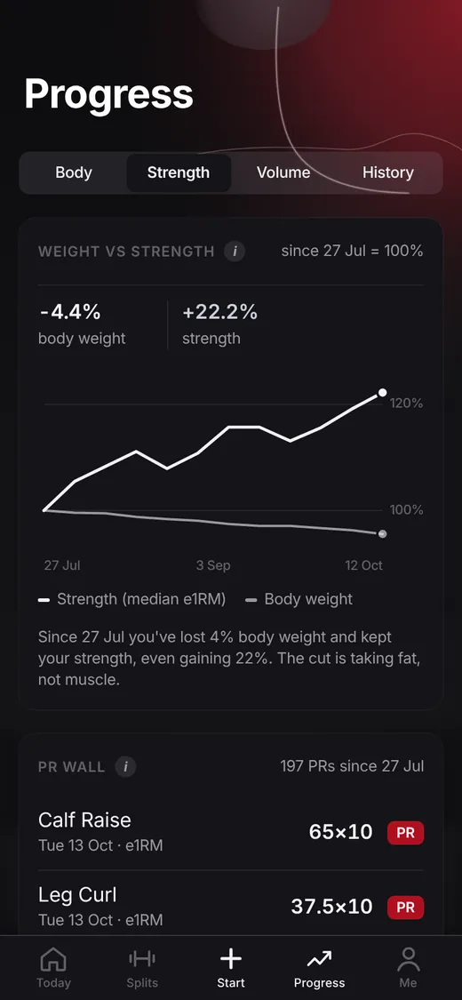

Job’s Done
Log your lifts fast and beat last time. Built for the gym floor, not for scrolling.
Create a free account


Fast logging
Last time’s numbers sit next to every set, plates load onto the bar with a tap, and a rest timer shows when your next set starts.
Your own splits
Build your own plan or start from ten presets like Push Pull Legs, Upper Lower and Full Body.
Four themes
Agent, Summit (its sky follows the time of day), Boulder and Skyline, each with its own scenery and voice.
Private and safe
Only you can see your data. No ads, no trackers, optional two-step sign-in, and export everything any time.